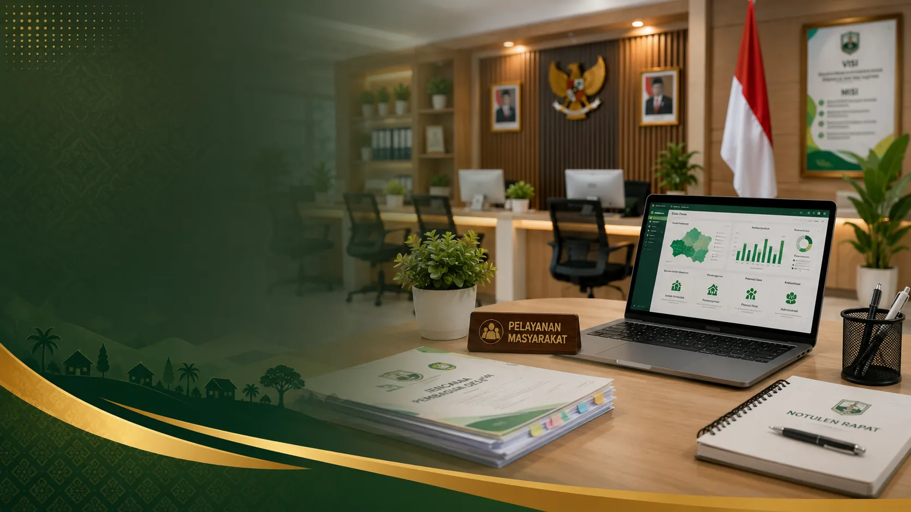

Desa Cantik
Desa Bina Bhakti
Kembali

PEMERINTAHAN DESA
Struktur Pemerintahan Desa Bina Bhakti
Struktur Organisasi Pemerintah Desa
PJ KEPALA DESA
NGATMONO, S.A.P
SEKRETARIS DESA
SLAMET WAHYUDI, S.Kom
Perangkat Desa
KAUR KEUANGAN
KURNIA AYU NILAM SARI
KAUR UMUM
NURWANTI
KAUR PERENCANAAN
SITI KOMAH
KASI PEMERINTAHAN
IBNU NGAQIL
KASI KESEJAHTERAAN
TITIN HARTINI
KASI PELAYANAN
M. NASRON AZIZ
STAFF DESA
EKA HADI PRATAMA
Badan Permusyawaratan Desa (BPD)
KETUA BPD
EKO BUDIMAN
WAKIL KETUA BPD
DARTUM
SEKRETARIS BPD
SRI RAHAYU
ANGGOTA BPD
TRANSMIANTO
ADIAS ERMANTU RIZAL
Ketua RW & RT
Ketua Rukun Warga (RW)
RW 01
TUSIMAN MUGIAWAN
RW 02
SARWAN
RW 03
SLAMET
RW 04
JADI HARTONO
Ketua Rukun Tetangga (RT)
RT 01
HARI HARJANTO
RT 02
SISWADI
RT 03
NUR KHOLIS
RT 04
AMANDA PUTRI
RT 05
LATIF
RT 06
SUTARNO
RT 07
EKO NUR CAHYANTO
RT 08
KASNO
RT 09
SRI WIJAYANTI
RT 10
ANISSA
RT 11
TRI UJANG SAPUTRA
RT 12
WAHIDIN
RT 13
RIKO YANTO
Satuan Perlindungan Masyarakat
DANTON LINMAS
SUGITO
Anggota Linmas
FADIL LUBIS
SUPENO
KAMAT
SODIKIN
KUSNAN
SUYANTO
SUKANDAR
TUHU WIDIANTO
KASMIDI
WARJAN
SAMSURI
RUSMAN
Demografis
Kehidupan Sosial